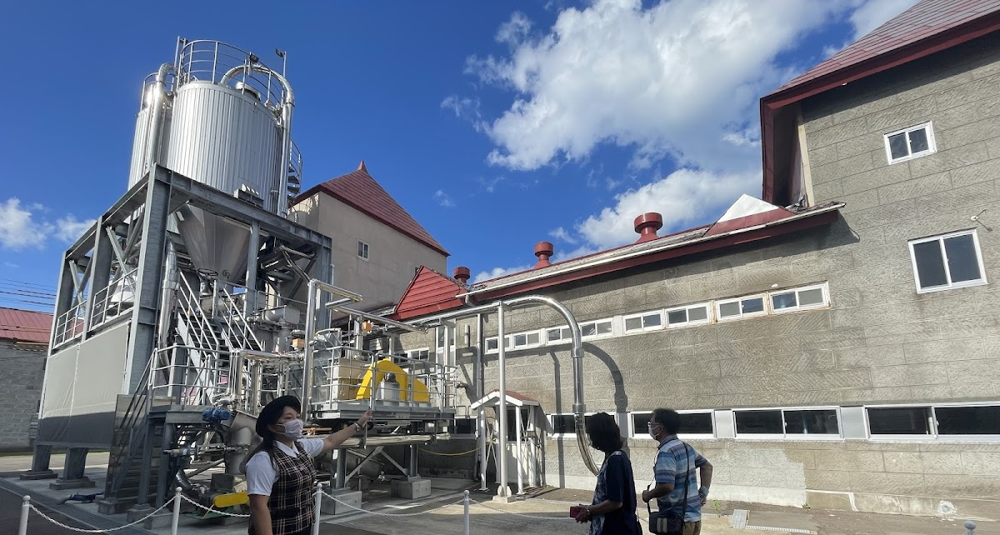
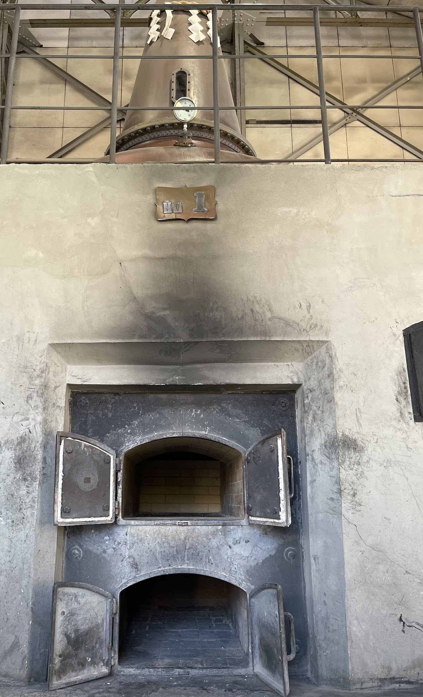
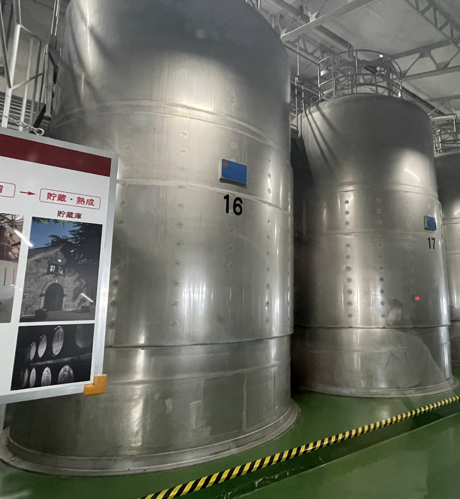
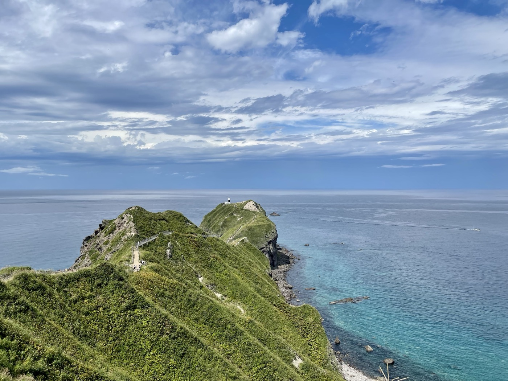
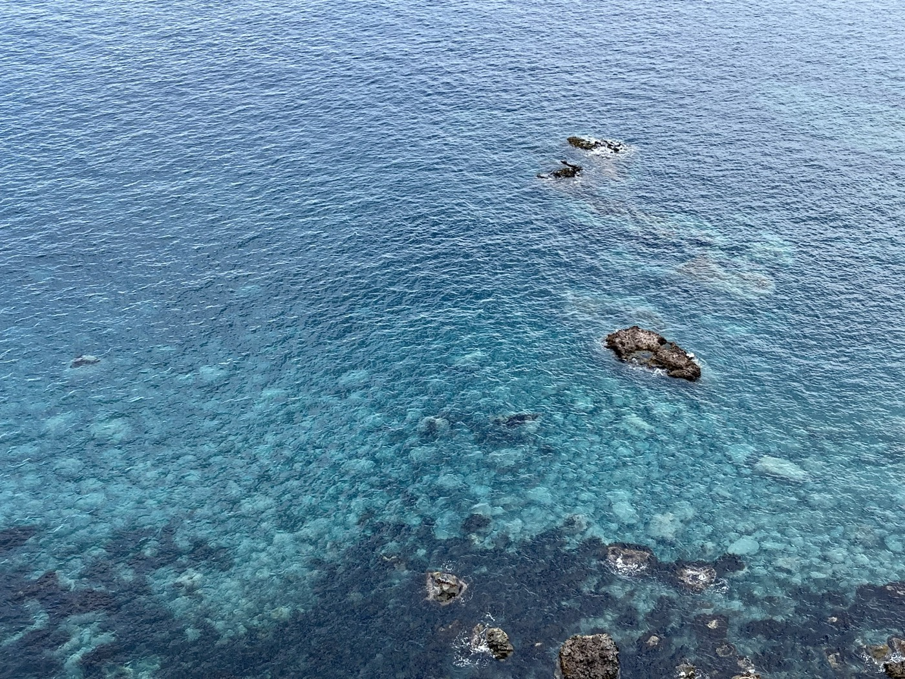
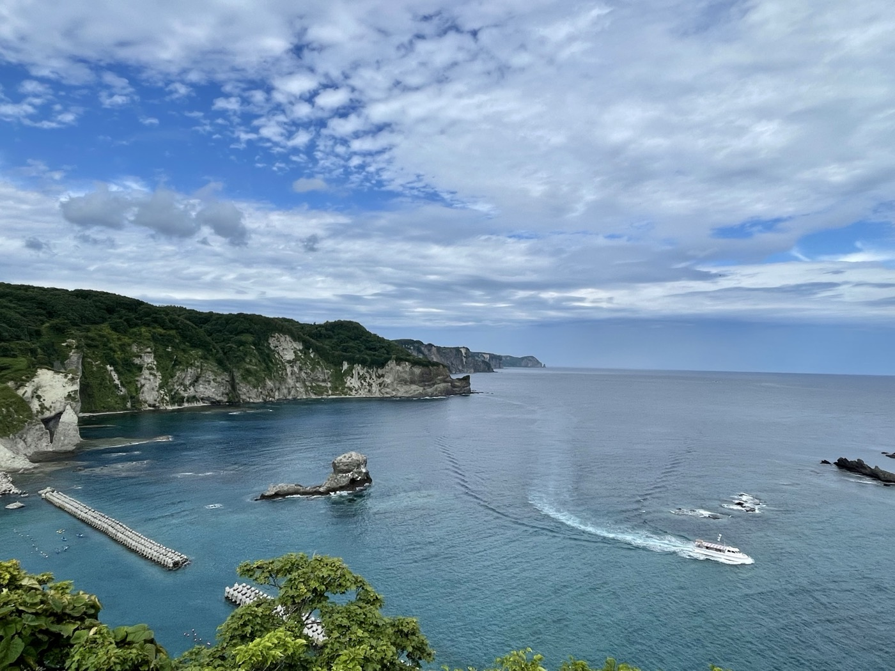
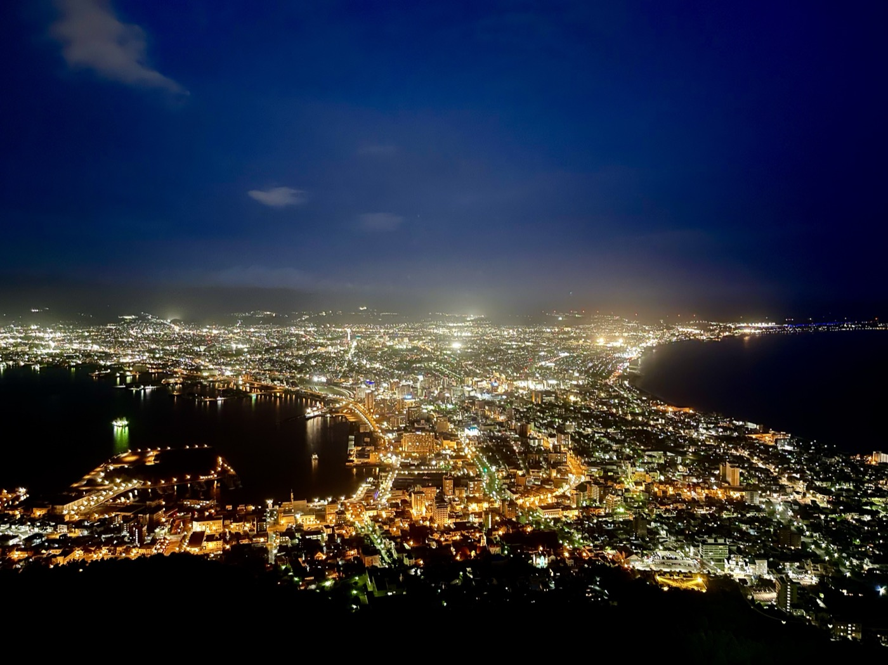

バイクとは別に、車で北海道を一人旅した記録。今回は積丹半島・留萌・函館を中心にまわった。バイクで走る北海道とは、また違う旅のリズムがあった。
ニッカウヰスキー 余市蒸溜所
神威岬へ向かう途中、余市に立ち寄った。ニッカウヰスキー 余市蒸溜所は無料のガイドツアーで見学できる。ウイスキー好きには最高の場所で、ガイドさんの説明がとても分かりやすくて素敵だった。



左：石炭直火蒸留の蒸留釜（No.1）。世界的にも珍しい製法だ。右：大型の貯蔵タンクが並ぶ施設内。
無料ツアーなのに、最後のショップで想定外の散財をした。限定品の棚が強すぎる。「限定」という言葉に弱い方は要注意だ。
神威岬——積丹半島の先端
積丹半島の先端に位置する神威岬は、日本海に細長く突き出た岬だ。岬の先端まで歩いていける遊歩道「チャレンカの道」は絶壁の稜線上を歩く形で、天気が良ければ透き通った積丹ブルーが一望できる。


黄金岬——留萌の夕景スポット
留萌市の黄金岬は、夕日の名所として知られる場所だ。岬の岩場から日本海に沈む夕日を見ると、なぜ「黄金」と呼ばれるかが分かる。

函館——夜景と朝市

函館は道南の拠点都市で、港町の雰囲気が色濃く残る。函館山からの夜景は「世界三大夜景」のひとつとされ、確かに圧巻だった。翌朝は朝市でウニ丼を食べた。
バイクは体で感じる旅。車は頭で考える旅。どちらも北海道に似合うが、同じ道を走っても見えるものが少し違う。車でゆっくり景色を眺める旅もいい。
今回訪れた場所
1
ニッカウヰスキー 余市蒸溜所
北海道余市郡余市町黒川町7-6 / 無料ガイドツアーあり（要予約）。見学後のショップに限定品多数あり。要注意。
2
神威岬
北海道積丹郡積丹町神岬町 / アクセス：小樽から車で約1時間30分（4〜11月シーズン中のみ先端まで入場可）
3
黄金岬
北海道留萌市礼受町 / アクセス：JR留萌駅から徒歩約15分
4
函館山
北海道函館市元町19-7 / アクセス：函館駅からロープウェイ山麓駅までバスで約10分。ロープウェイで山頂まで約3分
5
函館朝市
北海道函館市若松町9-19 / アクセス：JR函館駅から徒歩約3分